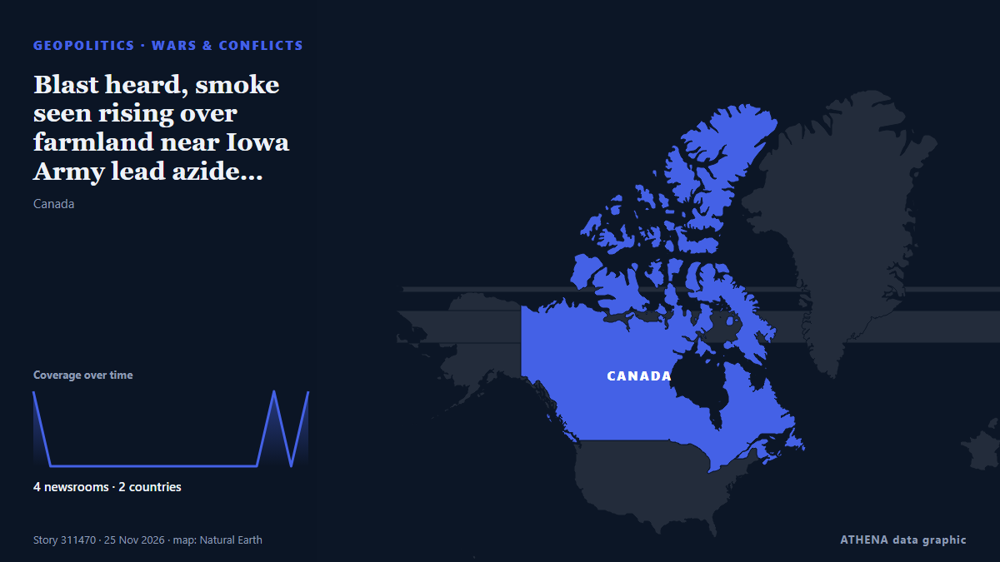

Energy, Resources & Environment
SponsoredPresented by  Cybernetics and Artificial Intelligence Lab Welcome to the Cybernetics and Artificial Intelligence Laboratory, established at the Department of Business Administration of the National and Kapodistrian University of Athens. The lab is headed by Professor Dimitrios Thomakos. The lab aims to do research that can be published in top venues. Our research uses tools and methods of Artificial Intelligence, and lies in the following areas: - Forecasting - Decision making - Cyber security - Finance We are always looking forward to collaborating with exceptional students!
Cybernetics and Artificial Intelligence Lab Welcome to the Cybernetics and Artificial Intelligence Laboratory, established at the Department of Business Administration of the National and Kapodistrian University of Athens. The lab is headed by Professor Dimitrios Thomakos. The lab aims to do research that can be published in top venues. Our research uses tools and methods of Artificial Intelligence, and lies in the following areas: - Forecasting - Decision making - Cyber security - Finance We are always looking forward to collaborating with exceptional students!

Pollution & biodiversityBlast heard, smoke seen rising over farmland near Iowa Army lead azide detonation site
The Army went ahead with its planned detonation of volatile lead azide reserves Wednesday morning, according to the service. from Defense News
| 13 Nov | 74 |
|---|---|
| 14 Nov | 41 |
| 15 Nov | 51 |
| 16 Nov | 109 |
| 17 Nov | 88 |
| 18 Nov | 84 |
| 19 Nov | 80 |
| 20 Nov | 54 |
| 21 Nov | 43 |
| 22 Nov | 35 |
| 23 Nov | 77 |
| 24 Nov | 71 |
| 25 Nov | 37 |
| 26 Nov | 1 |
Pope Leo XIV calls collapse of COP31 climate talks in Turkey ‘worrying’
Pope Leo XIV on Wednesday called the failure of the United Nations’ COP31 climate talks in Turkey “worrying,” saying the climate crisis affects millions of people. from Turkish Minute
Dangote Refinery to list on Nigerian Exchange December 1
The Dangote Petroleum Refinery says it will begin trading on the Nigerian Exchange (NGX) Group on December 1, marking its entry into the Nigerian stock market following its initial public offering… from Vanguard
Army detonates lead azide stockpile in Middletown, Iowa
Iowans are preparing for the U.S. Army to detonate a stockpile of lead azide on Wednesday morning, with recommendations to shelter inside or evacuate. from UPI World News
Iraqi PM orders ministry to manage oilfields in areas under Kurdish control
BAGHDAD, Nov 24 - Iraq's prime minister has ordered the energy ministry to manage oilfields in areas under Kurdish control, in a move likely to further strain relations with the semi-autonomous… from The Straits Times
Russians' tactics remain unchanged: they strike power lines and substations, we repair them – Zelenskyy
Volodymyr Zelenskyy said on 25 November that Russia's tactics remain unchanged, targeting power lines and substations to disrupt electricity transmission. from Ukrainska Pravda (English)
Army will blow up ammunition cache in Iowa today
The Iowa Army Ammunition Plant in Middletown, Iowa, Nov. from The San Juan Daily Star
US data centre boom through 2028 will lift power and gas demand: Goldman Sachs
The rapid expansion could further tighten US power markets and increase natural gas demand. from The Business Times
England logged record 5,258 heat-linked deaths this summer: health agency
England registered 5,258 deaths linked to this summer's heat, the highest number of such fatalities on record, the UK's Health Security Agency (UKHSA) said in estimates released Tuesday. from Citizen Digital
China, India set for record Russian oil imports in 2026
China and India are on track for record Russian oil imports this year, plugging a supply gap caused by the Iran war, as US sanctions waivers eased purchases and Ukrainian drone attacks knocked out… from Business Recorder
TotalEnergies strengthens its partnership with Continental Resources to develop its gas production
TotalEnergies has signed a new agreement with Continental Resources, under which TotalEnergies acquires interests in natural gas upstream assets. from Cyprus Shipping News
Equinor Inks 18-Year Gas Supply Deal with Germany's VNG
Equinor and German energy company VNG have signed an 18-year natural gas supply agreement running until the end of 2044, marking the longest Norwegian gas sales… from Offshore Engineer
Ramanan says Nepal tragedy families may get long-awaited closure with death certificates due in December
KUALA LUMPUR, Nov 25 — Certificates of presumed death for the victims of the flood and landslide tragedy in Nepal are ex... from Malay Mail
Army plan to detonate lead azide in Iowa 'insane': Attorney
An attorney representing victims of the Sept. from The Hill
Iraq PM sacks senior officials over oil smuggling scandal
Iraq's prime minister has sacked senior officials over an oil smuggling investigation and ordered tighter federal control over Kurdistan's oil exports. from The New Arab
Putin Calls for More Oil Refining in Siberia, Russia’s Far East
Russian President Vladimir Putin on Tuesday told a meeting of his fuel and energy commission that Russia must develop oil refining in Siberia and the Far East. from Kyiv Post
IAEA reports another loss of external power supply at ZNPP
The Zaporozhye Nuclear Power Plant switched to emergency diesel generators. from TASS (English)
Oil slips over 1% as supply glut prospect offsets Middle East disruption fears
Brent crude futures drop $1.35, or 1.5%, to $90.05 a barrel. from Express Tribune
UKRAINE PROTESTS SANCTIONED RUSSIAN OFFICIAL’S APPOINTMENT TO IAEA LEADERSHIP
Foreign Minister Andrii Sybiha branded Ferapontov's appointment as IAEA deputy director general "absurd," and described him as "an accomplice in one of the greatest threats and gravest crimes against… from Kyiv Independent
Australia reaffirms Pacific climate commitment despite COP31 outcome
AUSTRALIA reaffirmed its commitment to advancing Pacific climate priorities despite the outcome of COP31 falling short of regional... from Islands Business (Fiji)
“K” LINE Signs Contract for Construction of Two LPG Dual-Fuel VLGCs
Kawasaki Kisen Kaisha, announces today that it has signed agreements with South Korea-based HD Hyundai Samho regarding the construction of. from Cyprus Shipping News
Minamata disease exhibition to mark 70 years of recognition begins in Tokyo
An exhibition on Minamata disease, a mercury-poisoning ailment caused by environmental pollution, began Wednesday in Tokyo to raise p. from Mainichi (English)
China extends pause in controls on critical mineral exports to US
Beijing’s dominance of supply chains has given it leverage against Washington. from Financial Times - Markets
Panama says First Quantum accepts conditions for talks on reopening Cobre Panama mine
PANAMA CITY, Nov 23 - Panama's government said on Monday that miner First Quantum Minerals accepted the government's conditions for negotiations on reopening the Cobre Panama copper mine, which… from The Straits Times
India in French giant Saint-Gobain's top 5 markets
Air Liquide Egypt has started supplying Saint-Gobain’s glass manufacturing facilities in Ain Sokhna through an integrated industrial gases pipeline network, under a new long-term agreement supporting… from Daily News Egypt
Caricom disappointed at outcome of COP31
GEORGETOWN, Guyana (CMC) — The 15-member Caribbean Community (Caricom) grouping Monday expressed “its deep disappointment” that delegates who attended the United Nations Climate Change Conference… from Jamaica Observer
Gas Supply Imbalance Threatens 11 Iranian Provinces This Winter
The Managing Director of the National Iranian Gas Company (NIGC) warned of gas supply imbalances expected to affect 11 out of Iran’s 31 ... from IranWire
The climate card China has yet to play
No region has been as vocal and consistent on impact of climate change on habitability and migration as the Pacific. from Post-Courier (PNG)
Democrats win largest US House majority since 1992: media
Democrats have won the largest majority in the US House of Representatives in more than three decades, after Chuck Hubbard defeated Republican representative Virginia Foxx in North Carolina, US media… from Vanguard
Vitol to Start Construction on $2.3b South African LNG Project in 2028
A consortium led by Vitol's Engen unit expects to begin construction of a 40 billion rand ($2.3 billion) integrated LNG-to-power project in South Africa late in 2028, the global commodities trader… from MarineLink
San Francisco faces historic flood threat as major storm nears
San Francisco is bracing for potentially historic coastal flooding this week as unusually high tides and an approaching storm threaten to inundate roads and low-lying neighborhoods during the busy… from Livemint
COP31 ends in failure as countries split over fossil fuels, climate finance
COP31 ended without a consensus deal for the first time since 2009. from Ars Technica
‘Worst COP ever’: Climate talks collapse after draft deal fails to include fossil fuels
Governments and campaigners rejected the "cover decision" drafted at the U.N.'s climate summit, COP31, on Sunday. from CNBC World
Indonesia steps up irrigation push to sustain food self-sufficiency
Indonesia's Public Works and Agriculture ministries are strengthening irrigation infrastructure to sustain food ... from Antara (English)
Musadik Malik visits Humayun’s tom in India
Viral clip falsely claims Musadik Malik blamed Pakistan's army for rising terrorism during a Delhi speech. from Express Tribune